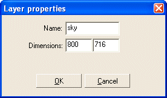
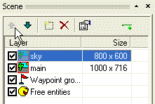
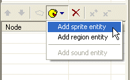
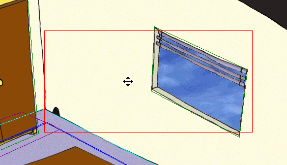

The previous step of the tutorial was quite difficult. Let’s have some rest in this last step. We will learn how to achieve a so called “parallax scrolling”. For this purpose, WME allows you to have multiple layers in one scene. If the layer’s dimensions are bigger than the game resolution, the layer will automatically scroll. And the bigger the layer is, the faster the scrolling will be. If you have, say, three layers, each of them having a different width, they will scroll each at a different speed. It’s as simple as that. To achieve a realistic perspective effect, the largest layers must be closest to the viewer. Another thing you need to know is that there is always one “main” layer and the other layers are only a decoration. Only the main layer can contain the regions.
Usually, three layers will be enough to get good results (background, main layer and foreground), but there is no limit on the number of layers in one scene.
We will add a background layer to our scene. It will be an image of the sky and it will be visible behind the window.
First of all we need some graphics for the layer. Once again the sky image is prepared for you in the “data\tutorial\gfx” folder. In ProjectMan, right click the “MyScene” folder and select the “Import->Import file(s)…” command. Browse to the “data\tutorial\gfx” folder, select a “sky.bmp” file and click OK. The sky image will be imported into your scene’s folder.
Open our “MyScene.scene” file in SceneEdit.
You will add a new layer by pressing the “Add layer” button above the layer list window.
SceneEdit will open the layer properties window. Change the name to “sky” and change the dimensions to 800, 716. That way the layer’s horizontal dimension matches the game resolution hence this layer will not scroll. Since the main layer WILL scroll, we will get a nice perspective effect. The vertical dimension matches the height of the main layer. This way the sky image will scroll at the same speed as the background, hence it will be always displayed behind the window.

Click OK to dismiss the layer properties dialog. You have to move the new layer to be first in the list (use the up and down buttons).

All we have to do now is to add a new entity to the newly created layer. We already know the “Add entity” button. Press it and select “Add sprite entity”. A new entity will be created. Change its name to “sky” and set its sprite to the “sky.bmp” file we’ve imported earlier.

Now move the entity to properly cover the window.

And that’s all. Save your scene and run the game. You should see a parallax scrolling in the action.
Congratulations! You have just finished your first scene for the Wintermute Engine!!! :-)
Now we can move to the last step of this tutorial, Step 9: Miscellaneous tips and procedures.